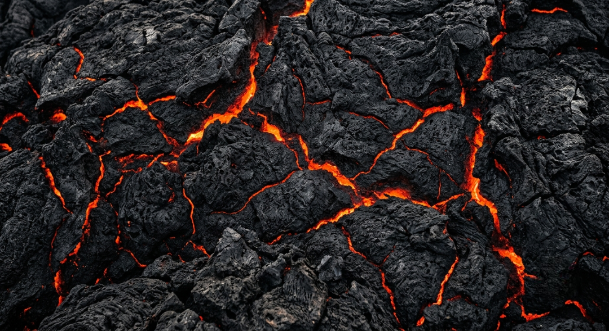
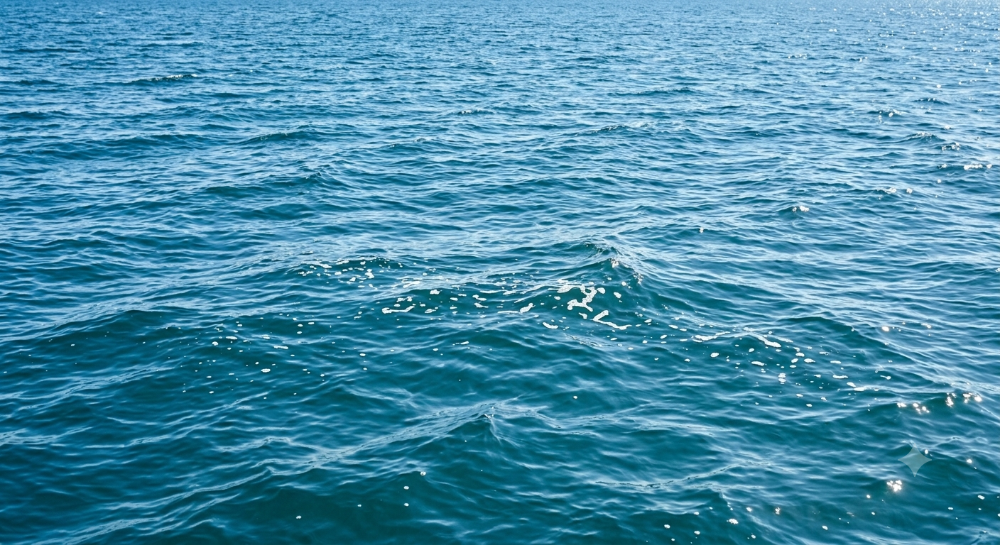
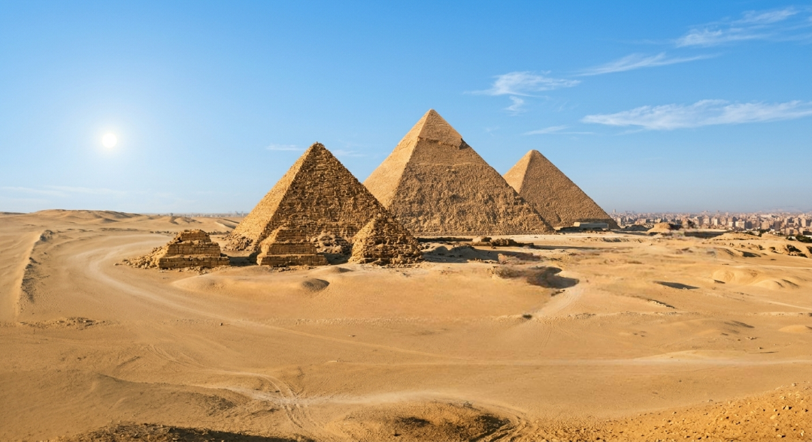
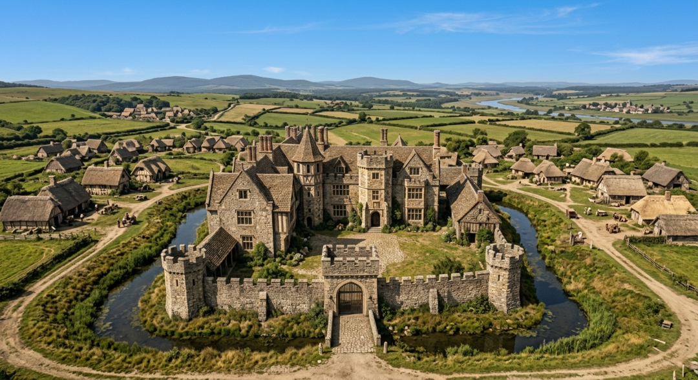
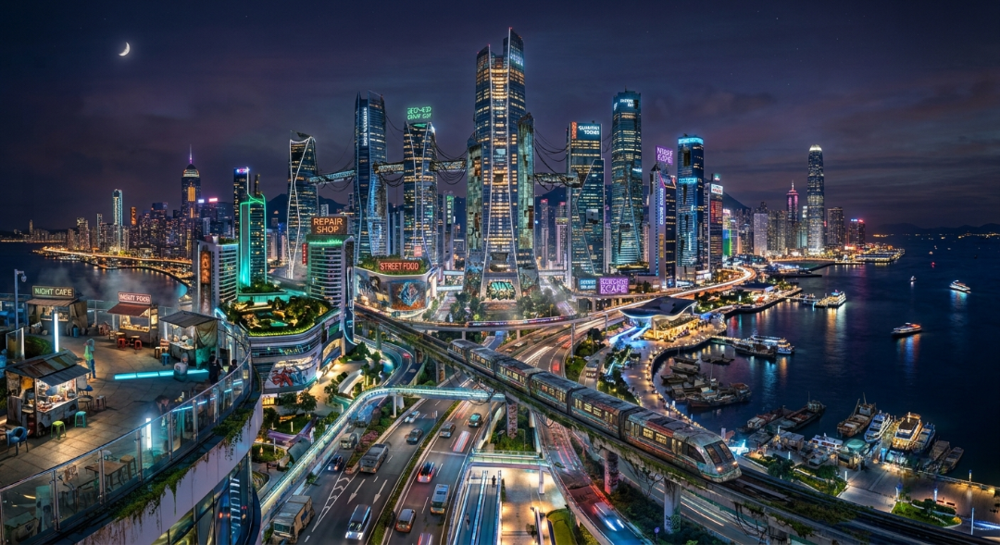

Машина часу

Сплавлена Земля
Перед початком життя, Земля була ворожим, хаотичним пекельним пейзажом з текучих океанів магми та токсичних атмосферних газів. Постійні обстріли метеоритами та сильні виверження вулканів утворила нестійку кірку, повільно зхолоджуючись протягом мільйонів років щоб закласти фундаментальний камінь нової планети.

Первинні океани
Поки планета охолоджувалася, масивні покриття хмар перетворилися на проливні дощі, створюючи великі океани. Глибоко всередині темних вод багатих мінералами, іскра життя була створена, створюючи примітивні одноклітинні організми, дивні трілобіти та найперші біологічні креслення, що зрештою покорили світ.

Епоха гігантів
Планета трансформувалася у вологий рай густих, доісторичних вологих тропічних джунглів та великих папоротів. Ця неприборкана екосистема призвела до легендарних динозаврів які домінували усі землі та моря протягом мільйонів років, доки катастрофічне зіткнення з астероїдом поклав кінець їхньому правлінню.

Стародавність
З'явились люди та почали перероблювати дикий світ на організовані цивілізації. По всьому світу ранні імперії прийшли до влади, вдосконалюючи архітектуру, математику та філософію. Конструкція монументальних пірамід Ґізи та класичних міст позначив світанок монументальної ергономіки та збережених історичних записів.

Середньовіччя
Епоха, яка характеризована розлогими фортецями, маєтками з бруківкою та феодальними королівствами, які поставали з попелу старих імперій. Лицарі охороняли зламані землі, поки торгівці прокладали величезні трансконтинентальні мережі, такі як Великий Шовковий Шлях почали з'єднувати далекі культури.

Сучасна епоха
Сьогоднішні кордони належать до архітектури цифрового світу, глобальних мереж та досконалої автоматизації. Сьогодні, сучасні технології працюють завдяки потокам даних, з'єднуючи мільярди людей по всій планеті. Людство зараз стоїть на роздоріжжі, рухаючись у майбутнє яке сформовано ШІ та миттєвим зв'язком.